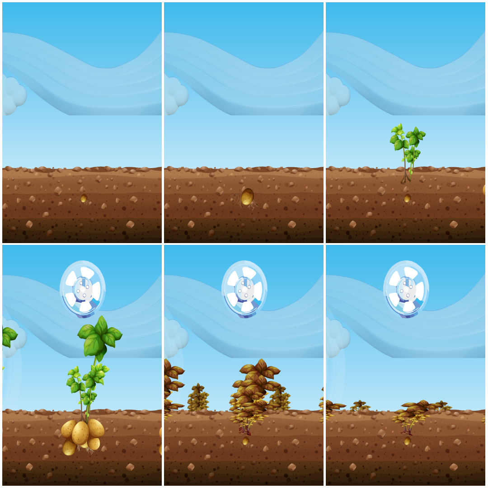
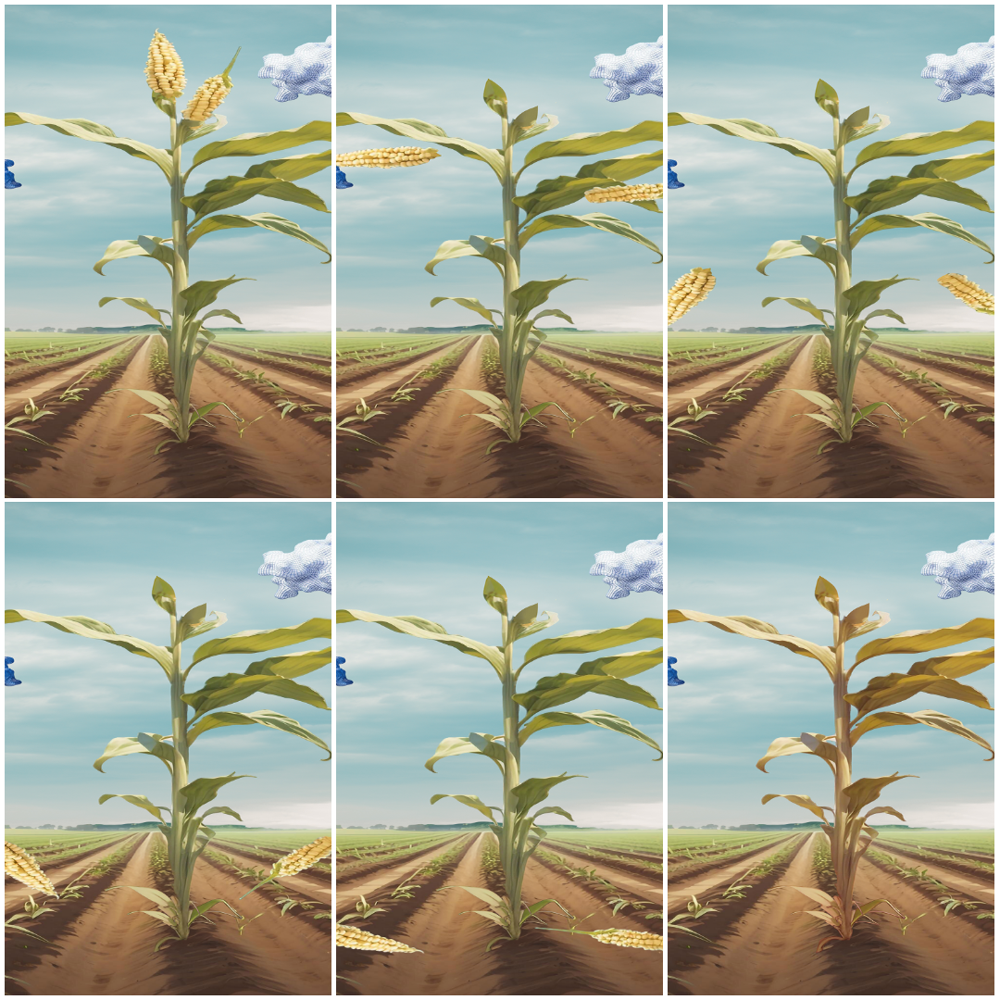
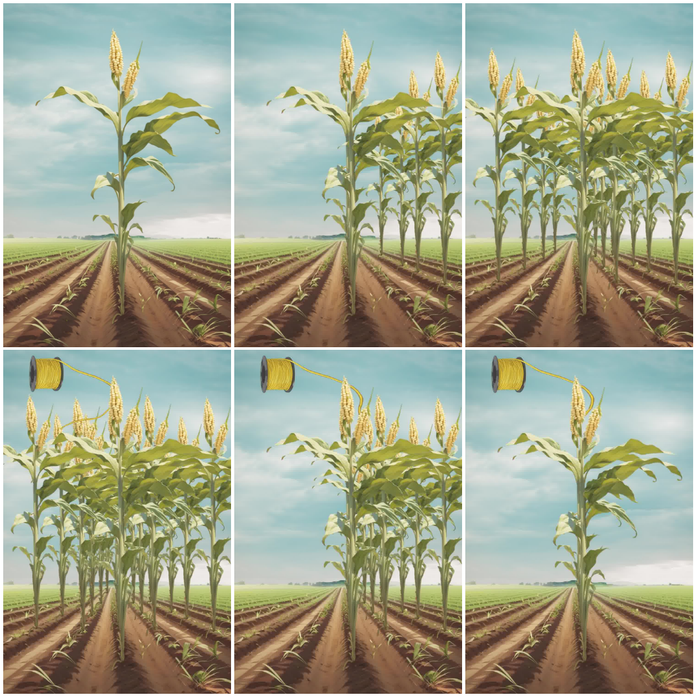
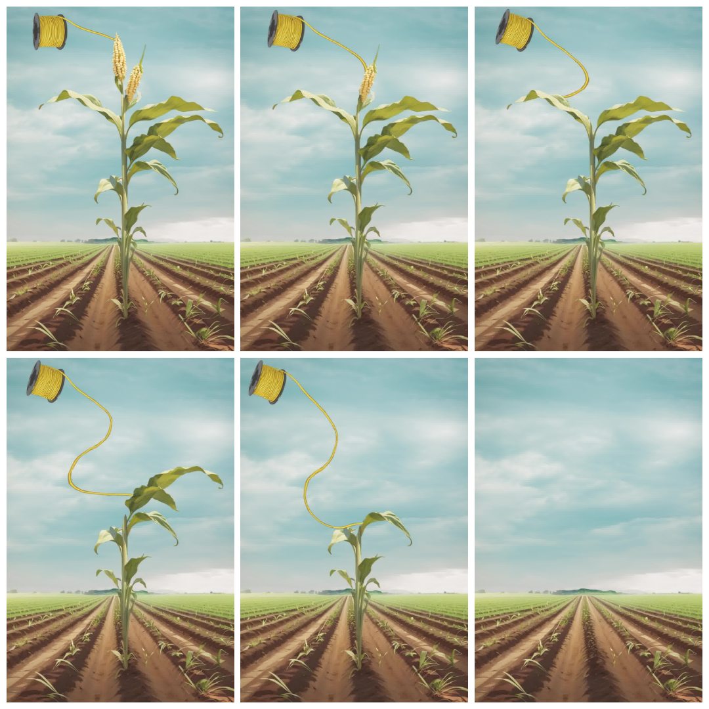

Design Philosophy
The Human-Centric EnMS platform embodies a design philosophy that balances functionality with aesthetics, creating an immersive experience that engages users while delivering powerful insights. Our visual identity reflects the intersection of technology, sustainability, and human-centered design.
Every element—from color schemes to typography—is intentionally crafted to support cognitive understanding, reduce visual fatigue, and inspire action towards energy efficiency goals.
Color Psychology
Eco-Green Palette
Represents sustainability, growth, and environmental consciousness in our energy management theme.
Electric Blue
Symbolizes energy, technology, and innovation—core elements of our digital platform.
Warm Accents
Highlight important metrics and call-to-action elements to guide user attention.
Dark Mode Elegance
Reduces eye strain for extended monitoring sessions with sophisticated dark themes.
Typography & Readability
We utilize the Inter font family—a carefully crafted typeface designed for screen readability. Its balanced proportions and clear letterforms ensure that critical energy data remains legible at all sizes, from detailed tables to at-a-glance dashboard headers.
- Hierarchy: Clear visual hierarchy guides users through complex information
- Contrast: Optimal contrast ratios meet WCAG accessibility standards
- Spacing: Generous line height and letter spacing improve readability
- Consistency: Unified type scale across all platform interfaces
Iconography System
Our comprehensive icon set from Font Awesome provides intuitive visual cues that transcend language barriers. Icons are strategically employed to:
- Reduce cognitive load by providing instant recognition
- Create visual consistency across different modules
- Support navigation and wayfinding within the platform
- Communicate status and alerts at a glance
Data Visualization Principles
Our visualization approach prioritizes clarity over complexity. We employ:
- Gradients: Create depth and visual interest while maintaining professionalism
- Rounded Corners: Soften the interface, making it more approachable
- Shadows & Elevation: Establish visual hierarchy and interactivity cues
- Animation: Smooth transitions provide feedback and enhance user experience
- Whitespace: Strategic use of negative space prevents information overload
Responsive Design
Artistic elements adapt seamlessly across devices—from large dashboard monitors to mobile phones. Our fluid grid system and flexible components ensure that beauty and functionality coexist regardless of screen size.
Energy Plant Visualizations
One of the most unique features of the ENMS platform is the Energy Plant Visualization System—an artistic approach to making energy consumption data immediately understandable through natural growth metaphors.
The Problem: Raw energy numbers (kWh, Watts) are abstract and difficult for non-technical audiences to contextualize. Is 0.5 kWh a lot or a little? How does today's consumption compare to yesterday?
The Solution: The system uses plant growth and decline as a visual metaphor for cumulative energy consumption and environmental impact:
- Growth Phase (Low Energy): As the printer consumes small amounts of energy, the plant grows from seed to healthy maturity—representing sustainable, efficient operation.
- Decline Phase (High Energy): As energy consumption increases beyond optimal levels, the plant begins to wilt, brown, and eventually die—representing the negative environmental impact of excessive energy use.
The Message: Operators can literally "see" when their energy consumption is "killing the planet" through the dying plant imagery. This creates powerful visual feedback to encourage energy efficiency.
Plant Type Collection
The system includes four distinct plant types, each with its own unique artistic style and number of growth stages. Each plant type is assigned per printer to create visual diversity across the fleet.
Potato (Generic Plant)
Stages: 21 (most granular progression)
Location: /artistic-resources/plants/potato/

Corn (Maize)
Stages: 8
Location: /artistic-resources/plants/corn/

Corn 2
Stages: 12
Location: /artistic-resources/plants/corn_2/

Corn 3
Stages: 7
Location: /artistic-resources/plants/corn_3/

Energy-to-Stage Mapping
Each printer has a cumulative energy counter that tracks total kWh consumed over its lifetime. This energy value is mapped to a growth stage between 1 and 21:
- Stage 1 (0.000 - 0.003 kWh): Seed / bare soil
- Stage 2 (0.003 - 0.006 kWh): Sprout emerging
- Stages 3-7 (0.006 - 0.010 kWh): Seedling with first leaves
- Stages 8-11 (0.010 - 0.100 kWh): Juvenile plant, growing height
- Stages 12-16 (0.100 - 1.000 kWh): Mature plant, full foliage (peak health)
- Stages 17-21 (1.000 - 3.000+ kWh): Plant wilting and dying (high energy consumption)
Important: The later stages (17-21) deliberately show the plant wilting, browning, and eventually dying. This symbolizes excessive energy consumption and its negative environmental impact. The metaphor: just as over-consuming resources kills a plant, high energy usage harms the environment.
Key Design Principles
- Intuitive: Everyone understands plant growth AND death—no technical knowledge required
- Gamified: Creates engagement and emotional connection to energy efficiency ("keep the plant healthy!")
- Powerful Messaging: Wilting/dying plants provide visceral reminder of environmental consequences
- Sustainable Messaging: Reinforces that excessive energy consumption has environmental impact
- Scalable: Plant imagery works across cultures and languages
- Honest: Doesn't sugarcoat high consumption—shows the real impact
Where You'll See Energy Plants
DPP Card Front
Large, prominent plant image centered on the card. Updates in real-time as printer consumes energy during active jobs.
PDF Reports
Final plant stage embedded as a "visual certificate" representing total energy consumed for that specific print job.
Historical Displays
Fleet comparison views show plant stages side-by-side to identify printers with highest cumulative energy usage.
Human-Centered Approach
Beyond pixels and code, our artistic vision centers on the human experience. We believe that beautifully designed tools inspire engagement, foster understanding, and ultimately drive meaningful action toward energy efficiency and sustainability goals.
The Energy Plant visualizations serve multiple purposes beyond aesthetics: sustainability awareness (making abstract energy consumption tangible), client communication (visually impressive and memorable), and team engagement (gamification creates emotional investment).
Every gradient, every transition, every carefully chosen color—and every plant growth stage—serves a purpose: to make energy management not just functional, but delightful.